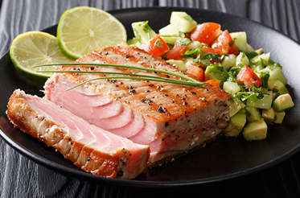

Recetas
Recetas
 Pollo
Pollo
 Pescado
Pescado
 Atun
Atun
 Veganas
Veganas
 Vegetarianas
Vegetarianas
 Quinoa
Quinoa

Atún a la parrilla con salsa de aguacate y cilantro
Un platillo sabroso y saludable con atún fresco a la parrilla, acompañado de una salsa fresca de aguacate y cilantro. Ideal para una comida ligera y deliciosa.
Dificultad
Medio

Personas
4

TOTAL
30MIN
Ingredientes:
- ● 4 filetes de atún fresco (aproximadamente 150 g cada uno)
- ● 2 aguacates maduros
- ● 1/4 taza de cilantro fresco, picado
- ● 1/4 de cebolla morada, picada finamente
- ● Jugo de 1 limón
- ● 1 cucharada de aceite de oliva
- ● Sal y pimienta al gusto
- ● 1 cucharadita de chile en polvo (opcional)
Información nutricional (aproximada por porción):
- ● Calorías: 400 kcal
- ● Proteínas: 35 g
- ● Grasas: 28 g
- ● Carbohidratos: 12 g
- ● Fibra: 8 g
A cocinar:
- 1. Precalienta la parrilla o una sartén a fuego medio-alto.
- 2. Salpica los filetes de atún con un poco de aceite de oliva, sal y pimienta.
- 3. Cocina los filetes de atún en la parrilla o sartén durante 2-3 minutos por cada lado, o hasta que estén dorados por fuera pero aún jugosos por dentro (puedes ajustar el tiempo dependiendo del grosor del atún).
- 4. Mientras se cocina el atún, prepara la salsa. En un tazón, machaca los aguacates con el jugo de limón, la cebolla morada, el cilantro picado, sal y pimienta al gusto.
- 5. Sirve los filetes de atún con una generosa cucharada de salsa de aguacate y cilantro por encima. Puedes espolvorear un poco de chile en polvo si te gusta un toque picante.